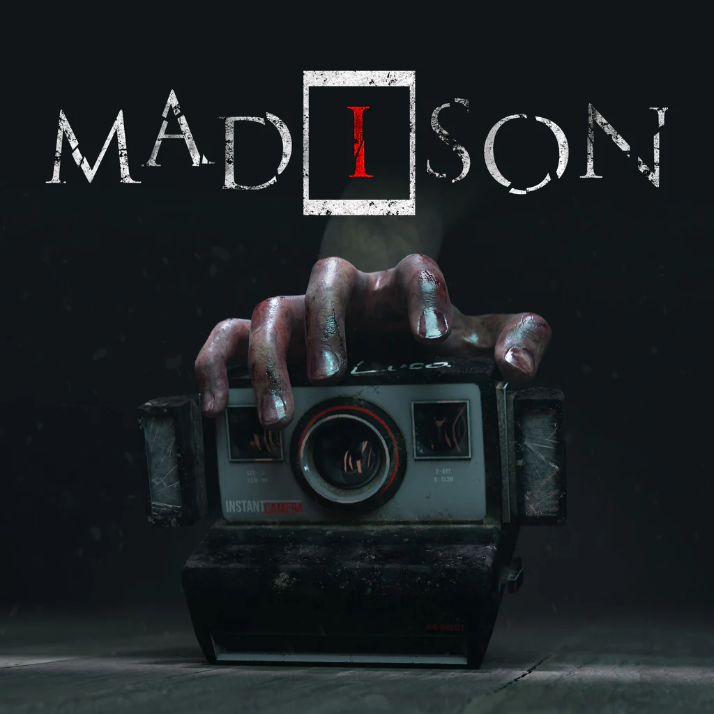

MADiSON é um jogo de terror psicológico em primeira pessoa desenvolvido pela Bloodious Games. O jogo foca em uma experiência intensa de exploração e resolução de enigmas dentro de uma casa cheia de eventos sobrenaturais. O jogador controla Luca, um personagem que acorda preso em uma situação misteriosa e passa a ser atormentado por uma entidade ligada a uma antiga câmera fotográfica. O gameplay gira em torno do uso dessa câmera, que permite revelar segredos ocultos, abrir caminhos e interagir com fenômenos paranormais. A atmosfera do jogo é extremamente pesada, com ambientes escuros, sons perturbadores e eventos inesperados que aumentam a tensão constantemente. O jogo não foca em combate, mas sim em sobrevivência, exploração e resolução de puzzles enquanto o jogador tenta entender o que está acontecendo. MADiSON ficou conhecido por sua abordagem intensa de terror psicológico e por sustos bem construídos ao longo da narrativa. A trilha sonora e os efeitos sonoros ajudam a manter o clima de desconforto constante. No geral, o jogo é considerado uma experiência de terror muito imersiva e angustiante dentro do gênero indie.
18+ - recomendado para maiores de 18 anos
A história de MADiSON acompanha Luca, que desperta em uma casa isolada e logo percebe que está envolvido em um evento sobrenatural ligado a uma entidade maligna. Essa presença parece estar conectada a uma antiga câmera fotográfica que possui habilidades estranhas e perturbadoras. Conforme o jogador explora a casa, ele descobre pistas sobre rituais antigos e eventos trágicos relacionados às pessoas que viveram ali. A câmera se torna a principal ferramenta para revelar o oculto, permitindo enxergar mensagens escondidas e fenômenos que não podem ser vistos normalmente. O ambiente muda constantemente, criando a sensação de que a própria casa está viva e reagindo à presença do protagonista. Sons estranhos, aparições repentinas e quebra de realidade fazem parte da experiência durante toda a jornada. A narrativa é fragmentada e cheia de mistérios, exigindo que o jogador junte as peças para entender o que realmente está acontecendo. Aos poucos, segredos sobre a entidade MADiSON e sua influência sobre Luca começam a ser revelados. O jogo mistura exploração, puzzles e terror psicológico em uma experiência intensa, focada em atmosfera e tensão constante.
7 de julho de 2022
Entre R$50 e R$150 (dependendo da plataforma e edição)
Aproximadamente 10 GB